Estructuras de decisi√≥n en los algoritmos¶
Como se puede observar, los problemas que se han presentado hasta el momento no implican cuestionamientos como: "qué pasa si no le gusta con azúcar", o bien, "qué pasa si le gusta más caliente", en un algoritmo de preparación de una taza de café, donde se puede seguir haciendo muchos cuestionamientos que conducen a tomar una decisión.
Por consiguiente,los algoritmos, en determinados momentos, requieren ser selectivos en lo que respecta a las acciones que deben seguir
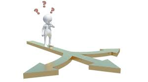
Tipo booleano¶
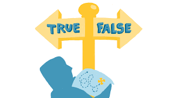
Los valores booleanos, sirven para que los programas sean capaces de
tomar decisiones lógicas. Estas decisiones se tomarán con valores
booleanos, true y false(verdades o falso)
En los lenguajes de programación tenemos el tipo de datos boolean que
nos permite tomar diferentes caminos en el algoritmo. Es necesario
dominar las expresiones con resultado booleano para saber el camino que
toma el algoritmo.
Un ejemplo
Un videojuego en el que tenemos que mostrar el enemigo cuando muere de una forma o si está vivo de otra. Podemos tener una variable booleana asociada al enemigo llamada
estaMuerto y en cada fotograma ir comparando la variable para saber la
imagen a mostrar
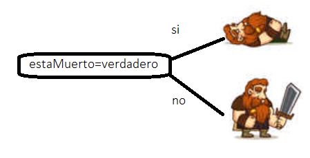
En un principio, estaMuerto será falso y si el enemigo es tocado por la
espada del héroe, cambiaremos estaMuerto por verdadero
Operadores relacionales¶
Los operadores relacionales son símbolos que se usan para comparar dos valores. Si el resultado de la comparación es correcto la expresión considerada es verdadera, en caso contrario es falsa.
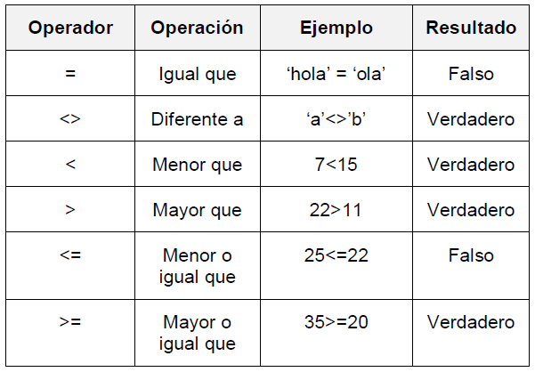
La expresión <> que nos devuelve verdadero si son distintos, en muchos lenguajes se expresa con
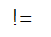
Ejemplo¶
Indica si es verdadero o falso en función del valor de X
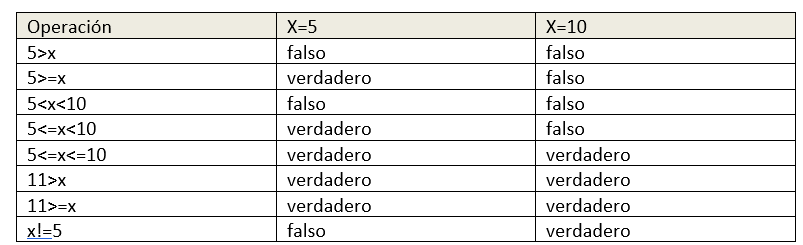
Si no te queda claro el resultado, podemos probarlo en PSeInt
Por ejemplo, para la primera expresión 5>x
Algoritmo pseudocódigo
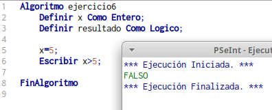
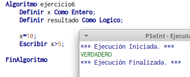
Estructuras selectivas.¶
Las estructuras selectivas nos permiten tomar caminos diferentes en el algoritmo. La mayoría de los problemas se tiene presente una estructura selectiva, que implica seguir o no un determinado flujo de secuencia del problema.
En los algoritmos para la solución de problemas donde se utilizan estructuras selectivas se emplean frases que están estructuradas de forma adecuada dentro del pseudocódigo.
En el caso del diagrama de flujo, también se estructura de una forma semejante.
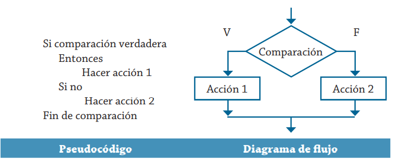
Ejemplo:
Se desea implementar un algoritmo para determinar cuál de los dos valores proporcionados es el mayor. Represéntalo con pseudocódigo y diagrama de flujo.
Se puede establecer que las variables que se deben utilizar son las mostradas en esta tabla.
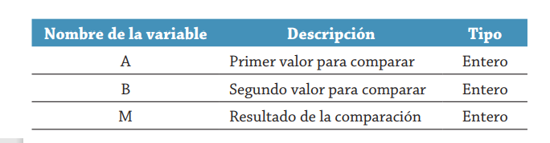
Pseudocódigo
Leer A, B
Si A > B
Entonces Hacer M = A
Si no Hacer M = B
Fin de comparación
Escribir "el mayor es", M
Fin
**Diagrama de flujo**

### Ejercicio
Crea el algoritmo anterior en PSeInt y comprueba que funciona
**Ejemplo:**
Realiza un algoritmo para determinar si un número es positivo o
negativo. Represéntalo en pseudocódigo y diagrama de flujo.
Para este caso, la tabla siguiente muestra las variables que se
requieren en la solución del problema.

```bash
Inicio.
Leer NÚM
Si NÚM \> = 0
Entonces Hacer R = "POSITIVO"
Si no Hacer R = "NEGATIVO"
Fin de comparación
Escribir "el número es", R
Fin
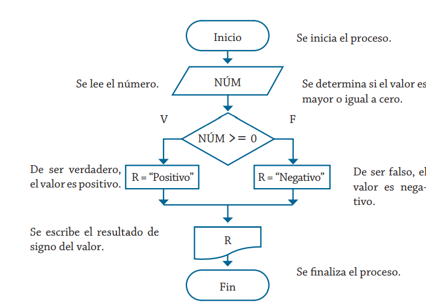
Ejercicio 1¶
Crea el algoritmo anterior en PSeInt y comprueba que funciona
Ejercicio 2¶
Si, inicialmente,
i = 0
. ¿Cuál es el valor de i después de ejecutar estos fragmentos de código individualmente?
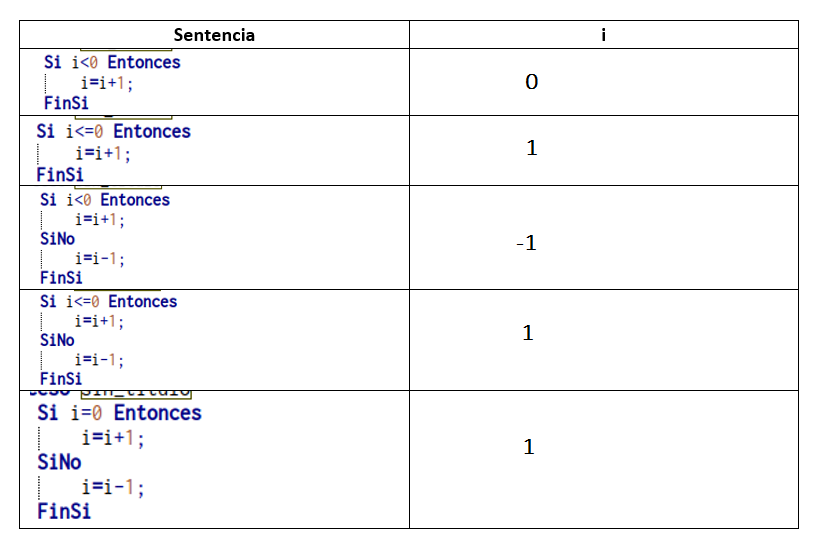
Ejercicio 3¶
Si queremos que i valga 2 después de ejecutar la siguiente sentencia. Rellena los huecos
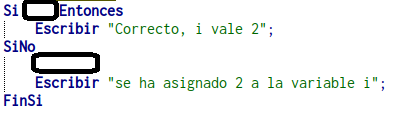
Ejercicio 4¶
Crea un algoritmo que pida al usuario:
- año de nacimiento
Sabiendo que estamos a 2023, le diga al usuario si es menor de edad o no. No tenemos en cuenta el mes ni el día
Ejercicio 5¶
Crea un algoritmo que pida al usuario:
-
nombre
-
apellido
-
año de nacimiento
Sabiendo que estamos a 2023, le diga al usuario:
-
es menor de edad: nombre + apellido + "no podemos registrarte. Eres menor de edad"
-
es mayor de edad: nombre+ apellido+ "estás registrado"
Guarda los datos en variables
Ejercicio 6¶
Crea un algoritmo para determinar cuánto se debe pagar (PAG) por una
cantidad de lápices (X) considerando que si son 1000 o más el costo es de 0.85 euros
de lo contrario, el precio es de 0.90 euros.
Ejercicio 7¶
Un hipermercado quiere un programa que calcule el impuesto sobre un aparato electrónico.
Un artículo que cuesta 300€ o más tiene un impuesto del 5% (0.05); y un artículo que cuesta
menos de 300€ está libre de impuestos. Desarrolla un programa que solicite por teclado un
precio, luego calcule e imprima el impuesto y luego imprima el coste total (precio + impuesto).
Ejercicio 8¶
Escribe un programa que genere un número aleatorio entre 1 y 10. Luego, pide al usuario que adivine el número. Si el número que ingresa el usuario es igual al número generado, muestra un mensaje de felicitación. Si no lo es, muestra un mensaje que indique si el número es demasiado alto o demasiado bajo. Busca en PSeInt la función que te permite obtener números aleatorios.
Ejercicio 9¶
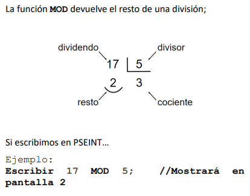
Escribe un algoritmo que pida al usuario un número entero y le diga si es par o impar. Recuerda que un número es par si se divide por 2 y el resto es 0.
En los lenguajes de programación, tenemos una función que nos devuelve el resto de la división. Se suele llamar módulo y muchos lenguajes de programación lo representan con %
Ejemplo
17%5 ->2
Selecci√≥n anidada¶
Hasta ahora, los problemas vistos solo presentan una decisión para realizar un determinado proceso; sin embargo, en algunas ocasiones es necesario elaborar estructuras selectivas en cascada o anidadas, esto significa que después de haber realizado una comparación selectiva es necesario realizar otra comparación selectiva como resultado de la primera condición. En la figura siguiente se presentan las formas correcta e incorrecta de estructurar el pseudocódigo para este caso:
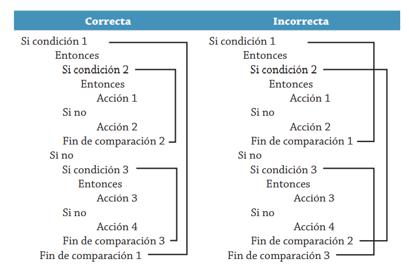
Su diagrama de flujo sería:
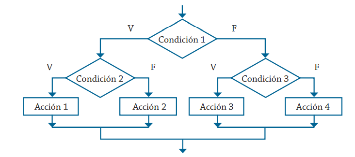
Ejemplo
Se requiere determinar cuál de las tres cantidades proporcionadas es la mayor. Realiza su respectivo algoritmo y represéntalo mediante un diagrama de flujo y pseudocódigo.
Las variables que intervienen en la solución de este problema se muestran a continuación.
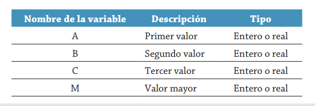
Su diagrama de flujo es:
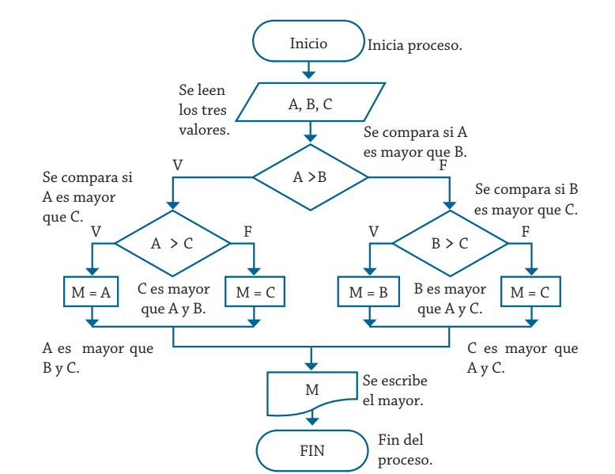
El pseudocódigo correspondiente sería el siguiente:
Inicio
Leer A, B, C
Si A > B
Entonces
Si A > C
Entonces M = A
Si no
M = C
Fin compara
Si no
Si B > C
Entonces M = B
Si no
M = C
Fin compara
Fin compara
Escribir "El mayor es", M
Fin
Ejercicio 10¶
Crea el algoritmo anterior en PSeInt y comprueba que funciona. Realiza el paso a paso del programa introduciendo varios valores viendo los diferentes caminos que toma.
Ejercicio 11¶
Escribe un algoritmo para clasificar el número pedido en una de las siguientes categorías: positivo, negativo o cero. Imprime un mensaje que indique la clasificación. Ejemplo:
3
Positivo
0
Cero
-6
negativo
Ejercicio 12¶
Solicita al usuario un número del 1 al 7, que represente un día de la semana. Luego, usa una sentencia \"if\" anidada para imprimir el nombre del día correspondiente (por ejemplo, \"1\" imprimiría \"Lunes\").
Ejercicio 13¶
Escribe un algoritmo que permita al usuario convertir entre diferentes unidades de medida. Pedirá un número y posteriormente mostrará
1-centímetros a pulgadas
2-litros a galones
3-metros a pies
Dependiendo de si es 1 ó 2 ó 3, realizará la conversión correspondiente
Ejercicio 14¶
Un hipermercado quiere un programa que calcule el impuesto sobre un aparato electrónico. Un artículo que cuesta 300€ o más tiene un impuesto del 5% (0.05); y un artículo que cuesta menos de 300€ está libre de impuestos. Desarrolla un programa que solicite por teclado un precio, luego calcule e imprima el impuesto y luego imprima el coste total (precio + impuesto).